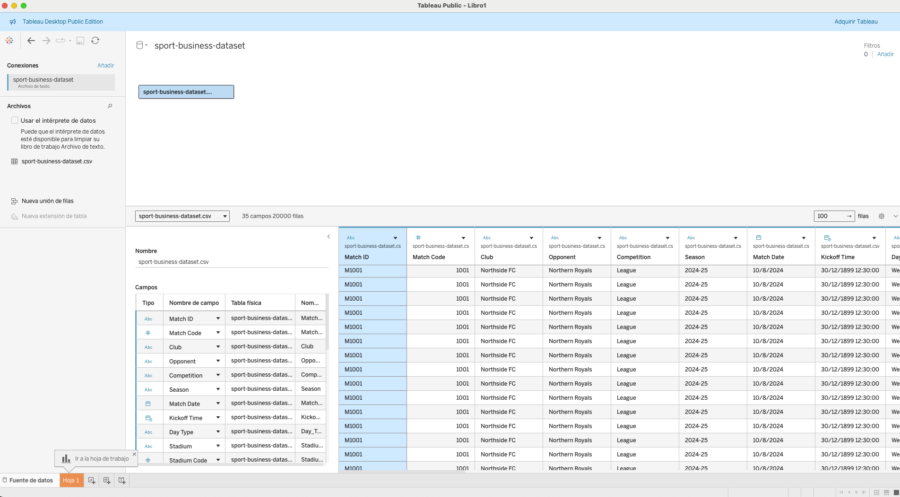
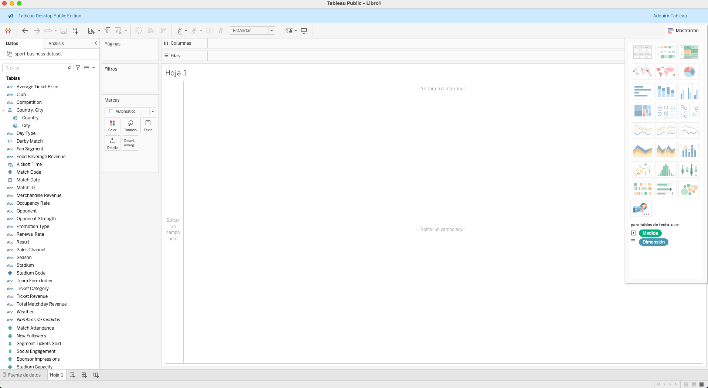

Choose the right Tableau environment.
Session 2 · Tableau Building Blocks
Getting Started with Tableau
Session 1 taught us to start with the question. Session 2 takes the next step: get the tool ready, inspect the data, then build and publish a first reviewable workbook.
Tableau reads structure. You provide business meaning.
Understand the CSV and its grain.
Predict data types before Tableau does.
Load the file and check the source page.
Prepare the Data Pane for analysis.
Create a first question-led view.
Save, share and make the workbook reviewable.
0% complete
Today's Journey · Approx. 3h45 incl. setup + hands-on practice
From first launch to reviewable workbook.
The order matters. We get Tableau ready, download the practice CSV, understand its business meaning, classify the fields, connect it, check Tableau's interpretation, organise the Data Pane, learn the workspace, build a first view and publish it properly.
- 00:00GETPublic vs DesktopTool choice
- 00:15SET UPInstall / openReady check
- 00:30INSPECTMeet the CSVDataset + grain
- 01:00TYPESData type iconsFull classification
- 01:25CONNECTData Source pageCSV workflow
- 01:50ACCESSLive vs ExtractScenario decisions
- 02:05ROLESDimensions and measuresDiscrete / continuous
- 02:35ORGANISEData Pane toolsFolders, hierarchy, group, set, bin
- 03:00NAVIGATEWorkspace areasInteractive tour
- 03:15CHOOSEShow MeChart families
- 03:25BUILDFirst viewStudent practice
- 03:40PUBLISHSave and reviewDownload enabled
- 03:55KAHOOTFinal checkWrap-up
Get Tableau Ready
Choose the environment and confirm students can open the tool.
S02-01 · Tableau Public vs Desktop
Choose the right Tableau environment
Before we touch a dataset, we need to know where we are working. Tableau Public is the public platform and portfolio space; Tableau Desktop Public Edition is the installed authoring environment we will mainly use for guided exercises.
Use it to browse visualisations, publish selected work to your profile and create vizzes in the browser where available.
Use it to work comfortably with local course files, build views and save to Tableau Public when ready.
We will mainly build using the desktop application and publish selected work to Tableau Public.
| Question | Tableau Public | Desktop Public Edition |
|---|---|---|
| Access | Web platform and public profile | Installed desktop application |
| Installation | Browser access | Windows or macOS installer |
| Local files | Can work online where supported | Comfortable for course CSV work |
| Authoring | Web authoring where available | Richer guided classroom workflow |
| Publishing | Public profile and sharing | Save / publish to Tableau Public |
| Course use | Portfolio, review and exploration | Main practical environment |
For this course
We will mainly build in Tableau Desktop Public Edition, then publish selected work to Tableau Public so it can be shared, reviewed and kept as part of your portfolio.
S02-02 · Install / open Tableau
Get Tableau ready
For this course, install Tableau Desktop Public Edition if you can. If installation is blocked, follow the live demo and use Tableau Public web as a backup route.
Self-guided installation walkthrough
Go to the official Tableau Public download page.
Enter your first name, last name, the closest student/education role available, country/region and university email. Marketing consent is optional.
Submit the form using the blue official download button.
Download or confirm the Windows or macOS installer if Tableau asks you to choose.
Run the downloaded installer and follow the prompts.
Launch Tableau Desktop Public Edition and use your Tableau Public account.
You can see the start screen and connect to a file.
What students will see first
The download page asks for basic registration details before it supplies the installer. Use your real details and university email so your setup remains easy to identify.
Open the downloaded installer, follow the prompts and allow installation if your device asks for permission.
Open the downloaded disk image or package and follow the installer prompts.
Ready check
Your task · reaction · 30 seconds
React when Tableau opens, you can see the start screen, your Tableau Public account works and you are ready to connect a dataset.
Installation problems?
- If installation is blocked, check administrator permissions.
- If your operating system is unsupported, use Tableau's official system requirements page.
- If sign-in fails, reset your Tableau Public password or check the verification email.
- If you are using a corporate laptop, restrictions may require IT support.
Next step
Now that Tableau is ready, let's look at the data before opening it. The tool should not be the first thing that interprets the CSV.
Understand the Data
Inspect the CSV, infer the grain and classify fields before building.
S02-03 · Meet the Practice CSV
Meet the data before Tableau does
Before connecting a dataset to any BI tool, inspect it first. Ask what one row represents, which fields identify things, which fields group things and which fields can be safely aggregated.
Matches, clubs, attendance, ticketing, revenue, segments, channels, geography, weather and digital engagement.
Do not assume one row means one match. Look for which values repeat and which values change.
If you misunderstand what one row represents, totals, averages and charts can become misleading.
Download practice dataset
Get the file before we analyse its structure
The important thing is not memorising every field. It is understanding what kind of business event each row is describing before Tableau interprets it for us.
Meet the fields
Field dictionary before the CSV preview
Use these grouped field families to understand the business meaning of the dataset. Then the raw file will be easier to inspect.
Match and fixture fields
| Field | Plain-English meaning | Example | Possible business use |
|---|---|---|---|
| Match_ID | Unique match identifier label. | M1001 | Keep fixture records distinct. |
| Match_Code | Numeric-looking match code. | 1001 | Identify matches; inspect before treating as a measure. |
| Club | Club being analysed for the row. | Northside FC | Compare performance by club. |
| Opponent | Opposing club for the fixture. | Northern Royals | Analyse opponent effects on demand. |
| Competition | Competition type. | League | Compare league, cup and European matches. |
| Season | Season label. | 2024-25 | Group or compare by season. |
| Match_Date | Calendar date of the fixture. | 2024-08-10 | Analyse time trends. |
| Kickoff_Time | Scheduled kickoff time. | 12:30 | Check whether timing affects demand. |
| Day_Type | Weekend or weekday classification. | Weekend | Compare attendance by fixture timing. |
| Result | Match outcome. | Win | Compare performance and commercial outcomes. |
| Derby_Match | Whether the fixture is a derby. | True | Separate high-rivalry fixtures from others. |
Venue and geography fields
| Field | Plain-English meaning | Example | Possible business use |
|---|---|---|---|
| Stadium | Venue name. | Northside Arena | Compare venues and build geography hierarchy. |
| Stadium_Code | Numeric-looking stadium identifier. | 101 | Identify venues; do not sum it. |
| City | City where the match is played. | Manchester | Geographic analysis and maps. |
| Country | Country of the fixture. | England | Country-level grouping or map role. |
| Stadium_Capacity | Maximum venue capacity. | 54800 | Compare demand against capacity. |
| Match_Attendance | Number of spectators attending the match. | 50450 | Compare demand across matches, competitions or time. |
| Occupancy_Rate | Share of capacity filled. | 0.9206 | Evaluate crowd utilisation; format as percentage. |
Fan and ticketing fields
| Field | Plain-English meaning | Example | Possible business use |
|---|---|---|---|
| Fan_Segment | Audience segment for the row. | Student | Compare customer behaviour by segment. |
| Ticket_Category | Ticket product category. | Standard | Analyse product mix and pricing. |
| Sales_Channel | How the ticket was sold. | Mobile App | Compare channel performance. |
| Promotion_Type | Promotion applied, if any. | Student Deal | Evaluate campaign or offer performance. |
| Segment_Tickets_Sold | Tickets sold for that segment/category/channel combination. | 640 | Analyse segment demand. |
| Average_Ticket_Price | Average ticket price for the row. | 28.50 | Compare pricing across segments and categories. |
| Renewal_Rate | Estimated renewal or retention rate. | 0.8447 | Assess fan loyalty risk. |
Commercial, digital and context fields
| Field | Plain-English meaning | Example | Possible business use |
|---|---|---|---|
| Ticket_Revenue | Ticket income for the row. | 23499.06 | Compare commercial performance. |
| Merchandise_Revenue | Merchandise income linked to the row. | 7130.40 | Analyse matchday spend beyond tickets. |
| Food_Beverage_Revenue | Food and beverage income. | 9820.15 | Analyse in-stadium spend. |
| Total_Matchday_Revenue | Combined matchday revenue measure. | 40449.61 | Evaluate total commercial performance. |
| Weather | Weather category for the fixture. | Rain | Check context effects on attendance. |
| Team_Form_Index | Team form index before the match. | 0.62 | Test whether form relates to demand. |
| Opponent_Strength | Opponent strength index. | 0.74 | Assess fixture attractiveness. |
| Social_Engagement | Digital engagement count. | 14200 | Compare online attention and attendance. |
| New_Followers | New follower count around the fixture. | 520 | Track audience growth. |
| Sponsor_Impressions | Estimated sponsor impression count. | 84000 | Assess sponsorship exposure. |
CSV preview
Now look at the raw file
This is what Tableau will receive: rows and columns. Your job is to bring the business meaning with you.
| Match_ID | Club | Competition | Match_Date | Day_Type | City | Match_Attendance | Occupancy_Rate | Fan_Segment | Ticket_Revenue | Renewal_Rate | Derby_Match |
|---|---|---|---|---|---|---|---|---|---|---|---|
| M1001 | Northside FC | League | 2024-08-10 | Weekend | Manchester | 50450 | 0.9206 | Season Ticket Holder | 23499.06 | 0.919 | Yes |
| M1007 | Northside FC | League | 2024-09-03 | Weekday | Manchester | 29900 | 0.5456 | Student | 3663.14 | 0.7646 | No |
| M1036 | Northside FC | Cup | 2025-02-14 | Weekday | Manchester | 36950 | 0.6743 | Corporate | 22095.0 | 0.8186 | No |
| M1104 | Harbour City FC | Cup | 2024-09-23 | Weekday | Liverpool | 29700 | 0.6875 | Student | 4926.18 | 0.8447 | No |
| M1217 | Capital Athletic | Cup | 2024-12-28 | Weekend | London | 48850 | 0.8008 | Away Supporter | 53778.12 | 0.747 | Yes |
View more fields
Match_CodeStadium_CodeKickoff_TimeTicket_CategorySales_ChannelPromotion_TypeSegment_Tickets_SoldAverage_Ticket_PriceTotal_Matchday_RevenueSponsor_ImpressionsWeather
Quick challenge — what does one row represent?
Look at the preview first. Which statement is the most precise description of one row?
Reveal the answer
One row = club-match + fan segment + ticket category + sales channel. You can see this because match-level fields repeat while segment, ticket and channel fields vary.
Why it matters: if you misunderstand the grain, you can double-count, aggregate incorrectly, misread totals and build misleading charts.
S02-04 · Understand data types
Data type is what is stored
We understand the business meaning of the fields. Now we need a different question: what kind of values are stored, and how might Tableau read them?
Stores labels or categories. Example: `Competition` = League.
Stores quantities, currency, counts, rates and numeric-looking codes. Example: `Match_Attendance` = 50450.
Stores calendar values. Example: `Match_Date` = 2024-08-10.
Stores time-like values when parsed correctly. Example: `Kickoff_Time` = 12:30.
Text fields can be assigned location meaning. Example: `City` = Manchester.
Stores a binary flag. Example: `Derby_Match` = True.
Important distinction
A data type tells Tableau what is stored. It does not automatically tell Tableau how we want to analyse it. `Stadium_Code` may look numeric, but it identifies a stadium; summing it would be meaningless.
Classify the dataset
Classify every field by Tableau data type
We now know what a data type is. Let's classify the entire dataset before Tableau does.
Let's classify them together · Instructor-led
For each field: read the field name, predict the data type, explain your reasoning, then click to reveal. Do not worry about Dimension vs Measure yet. Right now we are asking: what kind of value is stored?
Possible answers students can use
Abc Text / String
# Number (whole)
1.2 Number (decimal)
Cal Date
Time Date & Time / Time
T/F Boolean / Yes-No
? Needs inspection
Useful challenge: “Geographic” is not a stored data type. A city or country is usually stored as text, then assigned a geographic role in Tableau.
Match
Venue and Geography
Fan and Ticketing
Commercial, Digital and Context
Our interpretation
Good. We now have our own reading of the fields. The next question is whether Tableau will interpret them the same way.
Predict
What might Tableau assume?
You now know what the fields mean. Tableau only sees structure, so we need to predict which fields are most likely to need inspection.
Match_CodeStadium_CodeOccupancy_RateKickoff_TimeCityDerby_Match
Which field would you inspect first because its stored value may not match its business meaning?
Need a hint?
Ask whether a field contains a quantity to analyse or a code used to identify something.
Reveal the reasoning
`Stadium_Code` and `Match_Code` are classic inspection fields. They may look numeric to Tableau, but the business role is identification. The lesson is not that Tableau is wrong; it is that the analyst must check whether the interpretation matches the business meaning.
Now connect
We have our own interpretation. Now we can connect the file and check what Tableau actually does with it.
S02-05 · Connect the CSV
Connect your first data source
We understand the CSV. Now we can connect it and check how Tableau reads it before creating a worksheet.
Start Tableau Desktop Public Edition.
Use the file connector for a text file / CSV.
Locate `sport-business-dataset.csv`.
Check field names, icons and row preview.
Only then move to Sheet 1.
Live Tableau demo
Load the Sport Business Dataset
Goal
Connect the CSV and inspect Tableau's initial assumptions.
What I'll do
- Open Tableau Desktop Public Edition.
- Choose the text/CSV file connector.
- Select `sport-business-dataset.csv`.
- Review field names, icons and row preview.
- Open Sheet 1.
What to check
Look at `Match_Date`, `Match_Code`, `Stadium_Code`, `Occupancy_Rate`, `Renewal_Rate`, `City` and `Derby_Match`.
Student output
Connect the same file and type DONE when your screen matches.
If your screen looks different
- If the file is not found, check the download location.
- If a date is text, we will correct it together.
- If Tableau classifies a field differently, type the field name in the chat.
- If your version looks different, focus on the same areas: connection, preview grid, field icons and Sheet 1.
The Data Source page is your inspection room

Connection areaWhere the data comes from
File, database or published source.
Table / fileWhat Tableau loaded
Today: one CSV.
Field names + iconsHow Tableau reads columns
Check text, number, date, geography and yes/no fields.
Row previewWhat values look like
Scan repeated values, nulls and odd labels.
Do they mean what you expect?
Did Tableau interpret them correctly?
Do values look sensible?
Does one row match the grain we identified?
Anything suspicious before building?
Your inspection rule: do not rush to the chart. Check the data first.
S02-06 · Live vs Extract
How should Tableau access the data?
After connecting, Tableau can read from an underlying source or use an extract. This is not a morality test; it is a trade-off between freshness, performance, portability and source dependency.
Useful when freshness matters and the source is available and performant.
Useful for performance, portability, offline work or publishing. The snapshot needs refreshing when source data changes.
When saving to Tableau Public, use public-suitable data and understand that published work is accessible online.
| Consideration | Live | Extract |
|---|---|---|
| Data freshness | Can reflect source changes | Reflects latest refresh |
| Performance | Depends on source and network | Often faster, but not always |
| Source dependency | Needs source access | Can work from snapshot |
| Offline use | Limited | More suitable |
| Refresh | No separate extract refresh | Refresh schedule or manual update |
| Typical use | Operational data that must stay current | Portable dashboards and repeated analysis |
Quick decisions — Live or Extract?
Ask first: students choose Live or Extract and justify the trade-off. Then click the scenario to reveal a recommended answer and its reasoning.
Scenario ATicketing database updates every minuteLive or Extract? What requirement matters most?Click to reveal
Recommended starting pointLive — if minute-by-minute freshness genuinely matters
A live connection can query the current source. Confirm that the database and network can support the demand; otherwise a frequently refreshed extract may be the practical compromise.
Reason: freshness first.Scenario BCSV updated once per weekLive or Extract? How fresh must the analysis be?Click to reveal
Recommended starting pointExtract / file-based snapshot
The source only changes weekly, so real-time querying adds little value. Refresh after the weekly file update.
Reason: portability and simplicity.Scenario CLarge remote database is slow; reviewed dailyLive or Extract? Which trade-off matters?Click to reveal
Recommended starting pointExtract with a daily refresh
Daily freshness satisfies the review cycle while the optimised snapshot can reduce repeated pressure on a slow remote source.
Reason: performance with sufficient freshness.Scenario DYou need to work offline during a flightLive or Extract? Which option remains available?Click to reveal
Recommended starting pointExtract
A live connection depends on reaching the source. A local extract or file-based snapshot can travel with the workbook and support offline analysis.
Reason: no source connection available.
Your task · 45 seconds · chat
Pick one scenario and type Live or Extract with one reason.
There is no universal winner: choose the access method that best balances freshness, performance, portability and source dependency.
S02-07 · Dimensions vs Measures
Field role controls the question Tableau can answer
A dimension usually answers by what? A measure usually answers how much? This is one of the most important mental models in Tableau.
MeasureMatch_Attendance
by
The value being analysed.
DimensionCompetition
=
The grouping structure.
ViewAttendance by competition
A question-led visual answer.
MeasureTicket_Revenue
by
The commercial value.
DimensionTicket_Category
=
The comparison groups.
ViewRevenue by ticket category
Useful for pricing and packaging.
Full test — Dimension, Measure or Depends?
Classify every field by analytical role. Use Depends only when the role changes with the analytical question or aggregation needs special care. Say your answer first, then click that field to reveal the recommendation and why.
Your task · 5 min · individual then chat
Work through the full field list. Then type one obvious Dimension, one obvious Measure and one field where Depends is defensible.
Match_ID
DimensionIt identifies a match; aggregating it has no meaning.
Match_Code
DimensionIt looks numeric, but it is an identifier rather than a quantity.
Club
DimensionIt groups rows by club.
Opponent
DimensionIt creates opponent comparison groups.
Competition
DimensionIt groups fixtures by competition.
Season
DimensionIt is a season grouping label.
Match_Date
DependsIt is a time dimension, but it can behave as discrete headers or as a continuous axis.
Kickoff_Time
DimensionIt usually groups matches by time slot.
Day_Type
DimensionIt separates weekday and weekend categories.
Stadium
DimensionIt creates venue groups.
Stadium_Code
DimensionIt is an identifier, not a quantity to sum.
City
DimensionIt groups locations and can receive a City geographic role.
Country
DimensionIt groups locations and can receive a Country/Region geographic role.
Stadium_Capacity
DependsIt is numeric, but it repeats across detailed rows; aggregation must respect the grain.
Match_Attendance
DependsIt behaves like a measure, but repeated match values can be double-counted at this row grain.
Occupancy_Rate
DependsIt is a rate, so averaging or aggregating it requires care.
Fan_Segment
DimensionIt creates audience segment groups.
Ticket_Category
DimensionIt groups ticket products.
Sales_Channel
DimensionIt groups sales by route to market.
Promotion_Type
DimensionIt groups promotion types; blank values may need review.
Segment_Tickets_Sold
MeasureIt is a count recorded at the row grain.
Average_Ticket_Price
DependsIt is numeric, but averaging an existing average must match the question and weighting.
Ticket_Revenue
MeasureIt is additive revenue at the row grain.
Merchandise_Revenue
MeasureIt is an additive revenue component.
Food_Beverage_Revenue
MeasureIt is an additive revenue component.
Total_Matchday_Revenue
MeasureIt is the commercial total recorded at the row grain; still check for repetition.
Weather
DimensionIt is a contextual category for comparison.
Team_Form_Index
DependsIt can be analysed numerically or converted into bands for categorical comparison.
Opponent_Strength
DependsIt can be analysed numerically or segmented into strength bands.
Result
DimensionIt groups matches by outcome.
Social_Engagement
MeasureIt is an engagement count.
New_Followers
MeasureIt is a follower count.
Sponsor_Impressions
MeasureIt is an impression count.
Renewal_Rate
DependsIt is a rate; the correct aggregation depends on the analytical question.
Derby_Match
DimensionIt creates True/False comparison groups.
Concept connection
We now understand analytical role. Next, Tableau needs to decide how that field behaves visually in the view: discrete or continuous.
Discrete and continuous are about visual behaviour
JanFebMarApr
Use this when you want separate categories or month headers.
Use this when you want a continuous timeline or numeric scale.
Discrete month headers answer a grouped question. A continuous date axis supports a trend question.
You want a continuous timeline of attendance.
You want separate month headers in a table.
Organise the Data
Turn a raw Data Pane into a workspace students can analyse from.
S02-08 · Organise the Data Pane
Organise before you analyse
A large dataset can quickly become difficult to navigate. Tableau gives us several ways to make the Data Pane easier to understand and more useful analytically.
Folders
Hierarchies
Groups
Sets
Bins
Folders
What is it? A folder organises related fields inside the Data Pane. It does not change the underlying CSV.
When to use it: many fields, recurring analysis, related fields and faster navigation.
Watch me demoBuild a Ticketing folderClick to follow the instructor steps
Why this example: price, tickets, revenue and sales-channel fields answer one commercial question but are scattered through the Data Pane.
- In the Data Pane menu, select Group by Folder if the pane is currently grouped by data source.
- Cmd/Ctrl-click
Ticket_Category,Sales_Channel,Promotion_Type,Segment_Tickets_Sold,Average_Ticket_PriceandTicket_Revenue. - Right-click one selected field and choose Folders → Create Folder.
- Name it
Ticketingand confirm. - Collapse the folder, then expand it again to prove all six fields are inside.
- Search for
Ticket_Revenueand confirm the field still works exactly as before.
Demo checkpoint: six fields are easier to find; no values, roles or calculations have changed.
- 01Select related fields.
- 02Create or move to folder.
- 03Name the folder clearly.
- 04Verify the fields are easier to find.
What changes? The Data Pane becomes organised. The data itself does not change.
Hierarchies
What is it? A hierarchy defines a logical drill path between related dimensions.
Country→City→Stadium
Why? Users often move from a high-level view to more detail. A hierarchy supports that navigation without merging values.
Watch me demoCreate a Geography drill pathClick to follow the instructor steps
Business question: Which country contains the strongest matchday markets, and which city and stadium explain the result?
- Find
Country,CityandStadiumin the Data Pane. - Right-click
Countryand choose Hierarchy → Create Hierarchy. - Name it
Geography. - Drag
Cityinto the hierarchy below Country. - Drag
Stadiumbelow City. - Drag the Geography hierarchy to Rows and place
SUM(Total_Matchday_Revenue)on Columns. - Click the + beside Country to reveal City, then click + again to reveal Stadium.
- Use − to return to the country view.
Demo checkpoint: the order is Country → City → Stadium, and drill-down changes the displayed level rather than combining the three fields.
- 01Select or drag related dimensions.
- 02Create hierarchy.
- 03Name it.
- 04Order fields from broad to detailed.
Groups
What is it? A group manually combines members of a dimension into new business-friendly categories.
Before
→
Student · Family · Season Ticket Holder · Away Supporter · Corporate · Occasional Fan
After
Home & Community · Other Audiences
Use groups when: you want to simplify categories, combine equivalent values or compare broader segments.
Do not use groups when: you are hiding inconvenient values or need a dynamic rule. That is usually a Set problem.
Watch me demoCreate two audience familiesClick to follow the instructor steps
Business question: Do community-oriented audiences behave differently from the remaining customer segments?
- Right-click
Fan_Segmentand choose Create → Group. - Select Student, Family and Season Ticket Holder.
- Click Group and rename the member
Home & Community. - Select Away Supporter, Corporate and Occasional Fan.
- Click Group and rename it
Other Audiences. - Name the generated field
Fan Segment Groupand click OK. - Build a bar chart with the new group on Rows and
SUM(Ticket_Revenue)on Columns. - Replace it briefly with the original
Fan_Segmentto show the difference between six detailed members and two grouped categories.
Demo checkpoint: all six original values belong to exactly one of the two groups, and the original field still exists.
- 01Locate the dimension.
- 02Select members.
- 03Create Group.
- 04Rename the grouped field and categories.
- 05Use the new grouped field in the view.
Common beginner mistake: creating a group but continuing to use the original field.
Sets
What is it? A set defines whether each member is IN or OUT.
Top 5 fixtures by revenue→IN/OUT
Group asks: how should these categories be combined?
Set asks: does this member belong to this subset?
Watch me demoTop 5 fixtures versus all othersClick to follow the instructor steps
Business question: How much of ticket revenue comes from the five strongest fixtures rather than from the rest of the schedule?
Before creating the set
Find Ticket_Revenue. Its icon must be numeric and the field must behave as a measure. If the Top dialog offers only Count, Count Distinct, Minimum and Maximum, Tableau has read it as text.
- Check the icon beside
Ticket_Revenue. If it shows Abc, right-click the field and choose Change Data Type → Number (decimal). - If the numeric field remains under Dimensions, right-click it and choose Convert to Measure.
- Drag
Ticket_Revenuetemporarily to Text and confirm Tableau displaysSUM(Ticket_Revenue). Undo or remove the pill after checking. - Right-click
Match_IDand choose Create → Set. - Open the Top tab and select By field.
- Choose Top, enter 5, select
Ticket_Revenueand choose Sum in the final dropdown. - Name the set
Top 5 Fixtures by Ticket Revenueand click OK. - Drag the set to Rows and
SUM(Ticket_Revenue)to Columns. - Read the two resulting members: IN contains the Top 5; OUT contains every other Match_ID.
- Add
Match_IDto Detail and inspect which fixtures currently qualify.
Demo checkpoint: the aggregation dropdown includes Sum, and the output is an IN/OUT comparison—not a new category label for every fixture.
Selected competitions.
Matches with attendance above a threshold.
Top 5 fixtures by Ticket_Revenue.
Bins
What is it? A bin turns a continuous numeric field into ranges. Tableau creates a new binned field; the original measure remains unchanged.
Attendance→0-10K10-20K20-30K
Why it matters: bins help analyse distributions. Instead of asking the attendance of each match, we ask which attendance range appears most often.
Watch me demoCreate 5,000-person attendance bandsClick to follow the instructor steps
Business question: Are fixtures concentrated in a typical attendance range, or spread across low- and high-demand bands?
- Confirm
Match_Attendanceis numeric. - Right-click it and choose Create → Bins.
- Enter
5000as the bin size. - Name the generated field
Attendance (5K bins). - Drag the new bin field to Columns.
- Drag
Match_IDto Rows and change it to COUNTD. - Set Marks to Bar and sort the ranges in ascending order.
- Hover over a bar and explain that a 30,000 label represents a range beginning at 30,000—not exactly 30,000 attendees.
Demo checkpoint: the original attendance measure remains available and the new field describes numeric ranges.
- 01Right-click a numeric measure.
- 02Create → Bins.
- 03Choose bin size.
- 04Name the generated field.
- 05Use the bin field in the view.
Bin size matters: smaller bins show detail; larger bins summarise.
What do you need?
Combine categories? Group
Define IN vs OUT? Set
Create numeric ranges? Bin
Create a drill path? Hierarchy
Organise fields? Folder
Hands-on — folders and hierarchy
- 01Create folders
Use: Match, Geography, Venue, Ticketing, Commercial, Fan, Digital, Performance.
- 02Move every field
Use the reveal below to compare against the recommended structure after you try.
- 03Create hierarchies
Geography: Country → City → Stadium. Time: Season → Match_Date.
- 04Checkpoint
Type DONE when the whole Data Pane is easier to scan.
Show recommended folder structure
| Folder | Fields |
|---|---|
| Match | Match_ID, Match_Code, Club, Opponent, Competition, Season, Match_Date, Kickoff_Time, Day_Type, Result, Derby_Match |
| Geography | Country, City |
| Venue | Stadium, Stadium_Code, Stadium_Capacity, Match_Attendance, Occupancy_Rate |
| Ticketing | Ticket_Category, Sales_Channel, Promotion_Type, Segment_Tickets_Sold, Average_Ticket_Price, Ticket_Revenue |
| Commercial | Merchandise_Revenue, Food_Beverage_Revenue, Total_Matchday_Revenue, Sponsor_Impressions |
| Fan | Fan_Segment, Renewal_Rate |
| Digital | Social_Engagement, New_Followers |
| Performance | Team_Form_Index, Opponent_Strength, Weather |
Show recommended hierarchy structure
Country→City→Stadium
Use when moving from market context to the specific venue. Keep Stadium last because it is the most detailed level.
Season→Match_Date
Use for course exercises that begin with season context and then reveal individual fixtures. Tableau's built-in Year/Quarter/Month date drill remains available separately.
Before you finishNames describe the drill pathFields run broad → detailedEach level answers a meaningful next questionNo measure is placed inside the hierarchy
Hands-on — default properties
Default properties save repeated formatting decisions and reduce inconsistency across worksheets.
Average_Ticket_Price, Ticket_Revenue, Merchandise_Revenue, Food_Beverage_Revenue, Total_Matchday_Revenue.
Occupancy_Rate and Renewal_Rate.
Stadium_Capacity, Match_Attendance, Segment_Tickets_Sold, Social_Engagement, New_Followers, Sponsor_Impressions.
Country as Country/Region; City as City.
Match_Date with a clear date format.
Document Stadium_Code, Match_Code, Occupancy_Rate and Total_Matchday_Revenue.
Show recommended default property plan
| Field | Current role | Property | Recommended setting | Why |
|---|---|---|---|---|
| Ticket_Revenue | Measure | Number format | Currency | Commercial reporting. |
| Average_Ticket_Price | Measure | Number format | Currency | Price metric. |
| Merchandise_Revenue | Measure | Number format | Currency | Revenue component. |
| Food_Beverage_Revenue | Measure | Number format | Currency | Revenue component. |
| Total_Matchday_Revenue | Measure | Number format + comment | Currency | Total value students will reuse. |
| Occupancy_Rate | Measure | Number format + comment | Percentage | Rate; aggregation needs care. |
| Renewal_Rate | Measure | Number format | Percentage | Fan retention metric. |
| Match_Attendance | Measure | Number format | Whole number | Attendance count. |
| Stadium_Capacity | Measure / repeated field | Number format | Whole number | Capacity count repeated by grain. |
| City | Dimension | Geographic role | City | Supports maps. |
| Country | Dimension | Geographic role | Country/Region | Supports maps. |
| Match_Date | Date | Date format | Readable date | Supports timelines. |
Hands-on — groups, sets and bins
Create a Group
- 01Right-click the dimension.
- 02Select members.
- 03Create Group.
- 04Rename the generated field.
- 05Use the grouped field, not the original.
Create a Set
- 01Right-click the dimension.
- 02Create → Set.
- 03Choose manual, condition or Top N.
- 04Name the rule clearly.
- 05Use IN / OUT in the view.
Create a Bin
- 01Right-click a numeric measure.
- 02Create → Bins.
- 03Choose the bin size.
- 04Name the generated field.
- 05Use it to analyse distribution.
Groups · combine categories
Group 01Fan segment groupTask: Home & Community = Student + Family + Season Ticket Holder; Other Audiences = Away Supporter + Corporate + Occasional Fan.
Click for steps
How to create it
- Right-click `Fan_Segment` in the Data Pane.
- Choose Create → Group.
- Select Student, Family and Season Ticket Holder; click Group and rename it `Home & Community`.
- Select Away Supporter, Corporate and Occasional Fan; click Group and rename it `Other Audiences`.
- Rename the generated field `Fan Segment Group` and click OK.
- Use the new grouped field in a view and confirm that all six original values are represented.
Why: Compare two broad audience families without changing the original field.
Group 02Ticket category groupTask: Accessible = General Admission + Student + Family Pack; Premium Experience = Premium + Hospitality; Away End remains separate.
Click for steps
How to create it
- Right-click `Ticket_Category` and choose Create → Group.
- Select General Admission, Student and Family Pack; click Group and rename it `Accessible`.
- Select Premium and Hospitality; click Group and rename it `Premium Experience`.
- Leave Away End as its own category.
- Rename the generated field `Ticket Category Group` and click OK.
- Check the grouped field contains Accessible, Premium Experience and Away End.
Why: Compare mainstream, premium and away-ticket products using categories that actually exist.
Group 03Competition groupTask: Domestic Core = League + Cup; keep European and Friendly separate.
Click for steps
How to create it
- Right-click `Competition` and choose Create → Group.
- Select League and Cup; click Group.
- Rename that group `Domestic Core`.
- Leave European and Friendly ungrouped so they remain visible as separate members.
- Rename the generated field `Competition Group` and click OK.
- Use it in a bar view and check the three resulting categories.
Why: Combine the two core domestic competitions without incorrectly labelling Friendly or European fixtures.
Sets · define IN / OUT membership
Set 01Top fixturesTask: Top 5 Match_ID values by SUM(Ticket_Revenue).
Click for steps
How to create it
- Confirm
Ticket_Revenuehas a numeric icon. If it shows Abc, use Change Data Type → Number (decimal). - If necessary, right-click
Ticket_Revenueand choose Convert to Measure. - Right-click
Match_IDand choose Create → Set. - Open the Top tab and select By field.
- Choose Top 5 by Sum of
Ticket_Revenue. - Name it
Top 5 Fixtures by Ticket Revenueand click OK. - Drag the set into the view to compare IN with OUT.
If Sum is missing: cancel the dialog and correct the Ticket Revenue data type first. Do not use Count as a substitute: that would rank fixtures by number of rows, not by revenue.
Why: Identify the five match identifiers generating the most ticket revenue across their detailed rows.
Set 02High-attendance fixturesTask: Match_ID values where MAX(Match_Attendance) is at least 45,000.
Click for steps
How to create it
- Right-click `Match_ID` and choose Create → Set.
- Open the Condition tab.
- Select By field.
- Choose Maximum of `Match_Attendance` and set the condition to ≥ 45000.
- Name it `High Attendance Fixtures` and click OK.
- Use IN/OUT to compare high-demand fixtures with the rest.
Why: The CSV ranges from 19,700 to 58,900 attendance. MAX avoids multiplying the repeated match-level attendance across detailed rows.
Set 03Selected competitionsTask: League and Cup as IN; European and Friendly as OUT.
Click for steps
How to create it
- Right-click `Competition` and choose Create → Set.
- Stay on the General tab.
- Select League and Cup.
- Name the set `League and Cup` and click OK.
- Drag the set to Colour or Rows.
- Confirm League and Cup appear as IN, while European and Friendly appear as OUT.
Why: Compare selected domestic competitions with every other competition value in the file.
Bins · create numeric ranges
Bin 01Attendance rangesTask: Create 5,000-person Match_Attendance bins.
Click for steps
How to create it
- Confirm `Match_Attendance` is a numeric measure.
- Right-click it and choose Create → Bins.
- Set Size of bins to `5000`.
- Name the field `Attendance (5K bins)` and click OK.
- Drag the bin field to Columns and Number of Records to Rows.
- Read which attendance ranges occur most often, remembering that attendance repeats at the dataset grain.
Why: The real values run from 19,700 to 58,900, so 5,000-person bands produce interpretable crowd-size ranges.
Bin 02Ticket price rangesTask: Create €25 Average_Ticket_Price bins.
Click for steps
How to create it
- Confirm `Average_Ticket_Price` is numeric and formatted as currency.
- Right-click it and choose Create → Bins.
- Set Size of bins to `25`.
- Name the field `Ticket Price (€25 bins)` and click OK.
- Build a distribution using the new bin field.
- Check how prices between €9.09 and €207.96 are distributed.
Why: €25 bands summarise the actual price range without inventing categories absent from the file.
Bin 03Revenue rangesTask: Create €50,000 Total_Matchday_Revenue bins.
Click for steps
How to create it
- Confirm `Total_Matchday_Revenue` is numeric and formatted as currency.
- Right-click it and choose Create → Bins.
- Set Size of bins to `50000`.
- Name the field `Matchday Revenue (€50K bins)` and click OK.
- Use the new bin field to build a distribution.
- Inspect the long range from roughly €1.4K to €603.8K and look for sparse high-value bands.
Why: The larger bin size matches the much wider revenue range in the real CSV.
Your task · 8 min · Tableau + chat
Create at least one group, one set and one bin now. Use the rest as take-home completion. Type the one that felt most useful and why.
| Tool | Purpose | Works with | Creates | Typical output | Sport Business example |
|---|---|---|---|---|---|
| Group | Combine categories | Dimension members | New grouped dimension | Home & Community vs Other Audiences | Student + Family + Season Ticket Holder = Home & Community |
| Set | Define membership | Dimension members + rules | IN / OUT field | Top 5 vs Other | Top 5 fixtures by ticket revenue |
| Bin | Create numeric ranges | Continuous numeric fields | New binned field | 0-10K / 10-20K | Attendance bands for distribution |
Build With the Data
Use the organised fields to create a first question-led Tableau view.
S02-09 · Workspace key areas
Understand where building happens
The data is organised. Now we need to understand the workspace where fields become visual structure.

Data PaneFields live here
Search, organise, drag, inspect, create folders, change properties and create calculated fields later.
Rows + Columns + FiltersStructure
Rows and Columns define the main layout. Filters control what data is included in the view.
Canvas / ViewWhat Tableau draws
The analytical result of fields, shelves, filters, marks and aggregation.
CardsVisual encoding
Marks controls colour, size, label, detail, tooltip and shape. This connects directly to Session 1 visual attention.
Toolbar + TabsNavigation and workflow
Undo, redo, save, sort, swap, fit, worksheets, dashboards, stories and Data Source tabs.
Workspace tour — click, read, apply
Data Pane
Use this to find and organise fields before dragging them into a view.
Shelves
Use Rows and Columns to define the visual structure: for example, Competition on Columns and Attendance on Rows.
Cards
Use Marks and Filters to control encoding and what data appears.
Tabs
Use worksheets for individual views, dashboards to combine views and stories to sequence views later in the course.
Quick check · 30 seconds · chat
Where would you control colour or size? Where would you put `Competition` to create categories? Type one answer.
S02-10 · Show Me and chart types
Show Me is a helper, not an analyst
Show Me suggests chart types based on selected fields. It can help you build faster, but it does not know your question, audience or decision.
Question: which competition has the highest average attendance? Select `Competition` + `Match_Attendance`.
Question: how has attendance changed? Select `Match_Date` + `Match_Attendance`.
Question: is ticket price related to attendance? Select `Average_Ticket_Price` + `Match_Attendance`.
Question: where are our strongest markets or venues? Select `City` or `Country`.
Question: how are attendance values distributed? Use `Match_Attendance` or attendance bins.
Question: which categories contribute most to revenue? Select `Ticket_Category` + `Ticket_Revenue`.
Quick checks — choose the first chart to try
How has match attendance changed through the season?
Which competition has the highest average attendance?
Is ticket price related to match attendance?
Show Me suggests. You decide. Tableau can react to selected fields, but it cannot know whether the chart answers the business question.
S02-11 · Build your first view
Start with the question, then build
The first view should be simple and meaningful. We are learning how fields become a visual answer.
Watch me build · Live Tableau demo
Question: which competitions attract the highest average attendance?
What does management need to compare?
Groups the view.
Provides the value; check the aggregation.
Clear comparison across categories.
Your turn
Build a different first view
Your question
Which sales channels sell the most tickets?
This is deliberately different from the instructor demo: use Sales_Channel as the dimension and SUM(Segment_Tickets_Sold) as the measure.
Use a new blank worksheet.
Use this new dimension to define the comparison groups.
Use SUM so the view compares the total number of tickets sold through each channel.
Use a bar chart or Show Me if needed.
Sort descending and format numbers cleanly.
Use a meaningful name such as `Tickets Sold by Sales Channel`.
Response · chat
Type DONE when your view is built. Then answer: which channel leads, and what extra information would you need before recommending more investment in that channel?
If Tableau uses a different chart
Use Show Me only as support. The correct test is whether the view answers the question clearly.
Quick diagnosis · 45 seconds
Quick Data Pane Diagnosis
You open a workbook and see these fields. Before building anything, decide what you would inspect first.
| Field shown | Possible issue | Why it deserves inspection |
|---|---|---|
| Match_ID | Placed as a measure? | Identifier values should not be summed. |
| Match_Attendance | Placed as a dimension? | Attendance usually needs aggregation, with grain awareness. |
| Match_Date | Imported as text? | Date fields need calendar behaviour. |
| City | No geographic role? | Location fields may need geographic assignment. |
| Ticket_Revenue | No currency format? | Financial fields need readable formatting. |
| Occupancy_Rate | Shown as decimal? | Rates need percentage formatting and aggregation care. |
Your task · chat
Choose up to three fields you would inspect first and type one short reason for each.
Reveal the reasoning
Numeric-looking or text identifiers should group records, not become aggregated measures.
If placed as a dimension, Tableau may group values instead of aggregating attendance meaningfully.
This is normally a financial value to aggregate, compare or format as currency.
City should usually group rows and may need a geographic role.
A date should be checked as temporal data, not treated like a numeric measure.
A rate needs percentage formatting and careful aggregation.
Callback: do not trust default interpretation blindly. Tableau's first classification is a starting point; the analyst checks whether it matches the business meaning.
Publish the Work
Make the workbook public, named correctly and reviewable.
S02-12 · Save, publish and make it reviewable
Public work requires public judgement
You have built a first view. Now save it clearly, publish it to Tableau Public and make sure the workbook remains downloadable for review.
Keep your working file organised before publishing.
Use your Tableau Public account.
Use a clear workbook title.
Confirm the published workbook appears correctly.
Course naming convention
ESBS-DV_S02_YourName
Keep `ESBS-DV` unchanged. Use the correct activity code. Avoid special characters and unnecessary versions.
Review naming convention ↗Important for assessment
Your published workbook must remain downloadable so the instructor can review worksheets, calculations, field setup, structure and implementation.
Go to the workbook page on Tableau Public.
Use the controls available from your profile or viz page.
Keep workbook and data download enabled for course review.
Look for the Download option on the published viz.
Do not publish confidential data. Do keep course workbook downloads enabled for review.
Publishing checklist
`ESBS-DV_S02_YourName`.
It appears on your Tableau Public profile.
The instructor can download the workbook for review.
The sheet and workbook names explain the work.
Only use course-provided, public or anonymised data.
S02-13 · Wrap-up
Today we moved from first launch to reviewable workbook
01You can distinguish Tableau Public from the desktop authoring environment.
02You can inspect a CSV before Tableau interprets it.
03You can explain data type, analytical role, dimension/measure and discrete/continuous.
04You can organise the Data Pane with folders, hierarchy, group, set and bin.
05You can build, save and publish a first reviewable workbook.
Take-home practice
Complete and publish your Session 2 workbook
Use the same Sport Business dataset. Your goal is to finish the organisation work and create one additional view that answers a different business question.
Deadline
Complete this work by Thursday 19 November 2026, the day before Session 3.
Which competitions generate the highest ticket revenue?
How does attendance change throughout the season?
Which fan segments generate the most matchday value?
Review every field and fix obvious problems.
Organise the full Data Pane using the recommended structure.
Create Geography and Time hierarchies.
Currency, percentage, whole-number, date and geographic settings.
Create at least one of each using meaningful fields.
Choose one business question above and build a titled view.
Name it `ESBS-DV_S02_YourName` and publish/update it on Tableau Public.
Keep workbook download enabled so the instructor can review it.
Let's Kahoot
One final check
Can you recognise what Tableau is doing and make better analytical choices?
Focus on:
Tool choiceCSV grainData typesDimensionsMeasuresGroupsSetsBinsPublishing
Open Session 2 Kahoot ↗